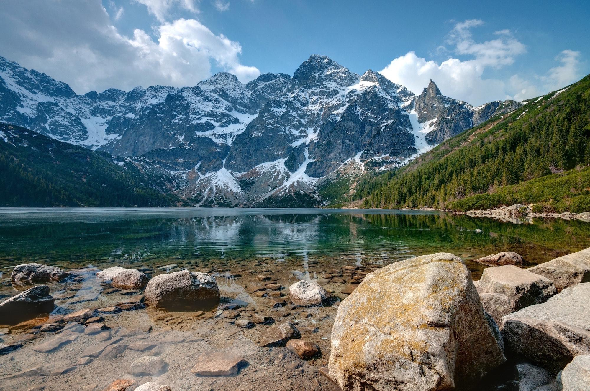

View from Morskie Oko
Reflections of Nature's Splendor in the Heart of the Mountains
The crystal-clear waters of Morskie Oko reflect the stunning, snow-capped peaks of the Rysy mountains. This breathtaking landscape combines the serene, emerald-green lake with the majestic beauty of the surrounding, snow-dusted peaks, creating a truly picturesque and tranquil scene that captivates all who visit.
Check Route More infoMost Popular Polish Peaks
Giewont, with its distinctive shape resembling a sleeping knight, is a prominent peak in the Tatra Mountains of Poland, standing at 1,895 meters and featuring a famous iron cross at its summit.
Rysy, the highest peak in Poland at 2,503 meters, offers stunning panoramic views of both Poland and Slovakia, making it a must-visit destination for avid hikers and nature lovers.
Stunning view? Reach these peaks and experience the breathtaking beauty in person!